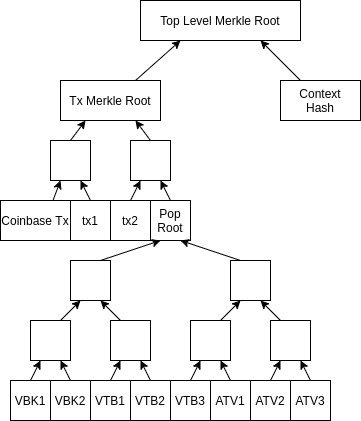

Overview
Altchain developers must ensure PopData is cryptographically authenticated in Block Header.
Regular transactions are typically cryptographically authenticated by inserting Merkle Root into Block Header, we will call it Original Merkle Root.
Merkle Root which is inserted into Block Header is now called Top Level Merkle Root.

Algorithm to calculate Top Level Merkle Root:
- Build Merkle Tree from individual items of PopData (those are VBK blocks, marked as VBK1 on the picture, VTBs and ATVs), resulting Merkle Root is called Pop Root.
- Insert PopRoot into vector of leaves and calculate Tx Merkle Root
Calculate ContextHash = HASH(BlockHeightBE || PreviousKeystoneHash || SecondPreviousKeystoneHash)
where
BlockHeightBE is 4 bytes of block height, serialized in Big-EndianPreviousKeystoneHash is a hash of a Previous Keystone Block. Its height can be calculated with altintegration::getPreviousKeystone(int, int)
- Calculate
TopLevelMerkleRoot = HASH(TxMerkleRoot || ContextHash)
1. VeriBlock Merkle root related functions are implemented in the merkle.hpp and merkle.cpp.
Pop Merkle trees header: https://github.com/VeriBlock/vbk-ri-btc/blob/master/src/vbk/merkle.hpp. Copy this file to your project.
Pop Merkle trees source: https://github.com/VeriBlock/vbk-ri-btc/blob/master/src/vbk/merkle.cpp. Copy this file to your project.
- Note
- Merkle Root calculation should fall back to the original Merkle Root if Pop protocol is not activated.
2. Use extended block weight calculation method that appends Pop data size.
https://github.com/VeriBlock/vbk-ri-btc/blob/master/src/consensus/validation.h
#include <primitives/block.h>
+#include <vbk/util.hpp>
+#include <veriblock/pop.hpp>
static inline int64_t GetBlockWeight(const CBlock& block)
{
- return ::GetSerializeSize(block, PROTOCOL_VERSION | SERIALIZE_TRANSACTION_NO_WITNESS) * (WITNESS_SCALE_FACTOR - 1) + ::GetSerializeSize(block, PROTOCOL_VERSION);
+ int64_t popDataSize = 0;
+ popDataSize += VeriBlock::GetPopDataWeight(block.popData);
+
+ return ::GetSerializeSize(block, PROTOCOL_VERSION | SERIALIZE_TRANSACTION_NO_WITNESS) * (WITNESS_SCALE_FACTOR - 1) + ::GetSerializeSize(block, PROTOCOL_VERSION) - popDataSize;
}
3. Extend ValidationState class for better veriblock-pop-cpp error processing.
https://github.com/VeriBlock/vbk-ri-btc/blob/master/src/consensus/validation.h
class ValidationState
std::string GetDebugMessage() const { return m_debug_message; }
+ std::string ToString() const {return m_reject_reason + ": " + m_debug_message; }
+
+ if(IsInvalid()) {
+ v.Invalid(m_reject_reason, m_debug_message);
+ return v;
+ }
+
+ if(IsError()) {
+ v.Invalid(m_reject_reason);
+ return v;
+ }
+
+ return v;
+ }
Class that is used for storing validation state.
4. Update the mining process with Pop Merkle root calculation.
https://github.com/VeriBlock/vbk-ri-btc/blob/master/src/miner.cpp
+#include <vbk/merkle.hpp>
#include <vbk/pop_service.hpp>
method IncrementExtraNonce
pblock->vtx[0] = MakeTransactionRef(std::move(txCoinbase));
- pblock->hashMerkleRoot = BlockMerkleRoot(*pblock);
+
+ pblock->hashMerkleRoot = VeriBlock::TopLevelMerkleRoot(pindexPrev, *pblock);
https://github.com/VeriBlock/vbk-ri-btc/blob/master/src/test/util/mining.cpp
method PrepareBlock
block->nTime = ::ChainActive().Tip()->GetMedianTimePast() + 1;
- block->hashMerkleRoot = BlockMerkleRoot(*block);
+
+ CBlockIndex* tip = ::ChainActive().Tip();
+ assert(tip != nullptr);
+ block->hashMerkleRoot = VeriBlock::TopLevelMerkleRoot(tip, *block);
5. Since Pop Merkle root algorithm depends on the blockchain, we should move Merkle root validation from the CheckBlock() to the ContextualCheckBlock().
https://github.com/VeriBlock/vbk-ri-btc/blob/master/src/validation.h
-bool CheckBlock(const CBlock& block, BlockValidationState& state, const Consensus::Params& consensusParams, bool fCheckPOW = true, bool fCheckMerkleRoot = true);
+bool CheckBlock(const CBlock& block, BlockValidationState& state, const Consensus::Params& consensusParams, bool fCheckPOW = true);
+
+
+bool ContextualCheckBlock(const CBlock& block, BlockValidationState& state, const Consensus::Params& consensusParams, const CBlockIndex* pindexPrev, bool fCheckMerkleRoot = true);
https://github.com/VeriBlock/vbk-ri-btc/blob/master/src/validation.cpp
method CChainState::ConnectBlock
- if (!CheckBlock(block, state, chainparams.GetConsensus(), !fJustCheck, !fJustCheck)) {
+
+
+
+ if (!CheckBlock(block, state, chainparams.GetConsensus(), !fJustCheck) && !ContextualCheckBlock(block, state, chainparams.GetConsensus(), pindex->pprev, true)) {
-bool CheckBlock(const CBlock& block, BlockValidationState& state, const Consensus::Params& consensusParams, bool fCheckPOW, bool fCheckMerkleRoot)
+bool CheckBlock(const CBlock& block, BlockValidationState& state, const Consensus::Params& consensusParams, bool fCheckPOW)
method CheckBlock
if (!CheckBlockHeader(block, state, consensusParams, fCheckPOW))
return false;
-
- if (fCheckMerkleRoot) {
- bool mutated;
- uint256 hashMerkleRoot2 = BlockMerkleRoot(block, &mutated);
- if (block.hashMerkleRoot != hashMerkleRoot2)
- return state.Invalid(BlockValidationResult::BLOCK_MUTATED, "bad-txnmrklroot", "hashMerkleRoot mismatch");
-
-
-
-
- if (mutated)
- return state.Invalid(BlockValidationResult::BLOCK_MUTATED, "bad-txns-duplicate", "duplicate transaction");
+
method CheckBlock
if (nSigOps * WITNESS_SCALE_FACTOR > MAX_BLOCK_SIGOPS_COST)
return state.Invalid(BlockValidationResult::BLOCK_CONSENSUS, "bad-blk-sigops", "out-of-bounds SigOpCount");
- if (fCheckPOW && fCheckMerkleRoot)
+ if (fCheckPOW)
block.fChecked = true;
method CheckBlock
- if (block.vtx.empty() || block.vtx.size() * WITNESS_SCALE_FACTOR > MAX_BLOCK_WEIGHT || ::GetSerializeSize(block, PROTOCOL_VERSION | SERIALIZE_TRANSACTION_NO_WITNESS) * WITNESS_SCALE_FACTOR > MAX_BLOCK_WEIGHT)
+ if (block.vtx.empty() || block.vtx.size() * WITNESS_SCALE_FACTOR > MAX_BLOCK_WEIGHT || GetBlockWeight(block) > MAX_BLOCK_WEIGHT)
-
-static bool ContextualCheckBlock(const CBlock& block, BlockValidationState& state, const Consensus::Params& consensusParams, const CBlockIndex* pindexPrev)
+bool ContextualCheckBlock(const CBlock& block, BlockValidationState& state, const Consensus::Params& consensusParams, const CBlockIndex* pindexPrev, bool fCheckMerkleRoot)
method ContextualCheckBlock
- int64_t nLockTimeCutoff = (nLockTimeFlags & LOCKTIME_MEDIAN_TIME_PAST)
- ? pindexPrev->GetMedianTimePast()
- : block.GetBlockTime();
+
+ if (fCheckMerkleRoot && !VeriBlock::VerifyTopLevelMerkleRoot(block, pindexPrev, state)) {
+
+ return false;
+ }
+
+ int64_t nLockTimeCutoff = (nLockTimeFlags & LOCKTIME_MEDIAN_TIME_PAST) ? pindexPrev->GetMedianTimePast() : block.GetBlockTime();
method TestBlockValidity
if (!ContextualCheckBlockHeader(block, state, chainparams, pindexPrev, GetAdjustedTime()))
return error("%s: Consensus::ContextualCheckBlockHeader: %s", __func__, FormatStateMessage(state));
- if (!CheckBlock(block, state, chainparams.GetConsensus(), fCheckPOW, fCheckMerkleRoot))
+ if (!CheckBlock(block, state, chainparams.GetConsensus(), fCheckPOW))
return error("%s: Consensus::CheckBlock: %s", __func__, FormatStateMessage(state));
- if (!ContextualCheckBlock(block, state, chainparams.GetConsensus(), pindexPrev))
- return error("%s: Consensus::ContextualCheckBlock: %s", __func__, FormatStateMessage(state));
+ if (!ContextualCheckBlock(block, state, chainparams.GetConsensus(), pindexPrev, fCheckMerkleRoot))
+ return error("%s: Consensus::ContextualCheckBlock: %s", __func__, state.GetRejectReason());
https://github.com/VeriBlock/vbk-ri-btc/blob/master/src/bench/duplicate_inputs.cpp
method DuplicateInputs
BlockValidationState cvstate{};
- assert(!CheckBlock(block, cvstate, chainparams.GetConsensus(), false, false));
+ assert(!CheckBlock(block, cvstate, chainparams.GetConsensus(), false));
6. Add helper genesis_common.cpp file that allows Genesis block generation.
Genesis block generation header: https://github.com/VeriBlock/vbk-ri-btc/blob/master/src/vbk/genesis_common.hpp. Copy this file to your project.
Genesis block generation source: https://github.com/VeriBlock/vbk-ri-btc/blob/master/src/vbk/genesis_common.cpp. Copy this file to your project.
7. Add new tests: block_validation_tests.cpp, vbk_merkle_tests.cpp.
Block validation test: https://github.com/VeriBlock/vbk-ri-btc/blob/master/src/vbk/test/unit/block_validation_tests.cpp. Copy this file to your project.
Pop Merkle Root validation test: https://github.com/VeriBlock/vbk-ri-btc/blob/master/src/vbk/test/unit/vbk_merkle_tests.cpp. Copy this file to your project.
8. Add Pop Merkle trees code to the makefile.
https://github.com/VeriBlock/vbk-ri-btc/blob/master/src/Makefile.am
libbitcoin_common_a_SOURCES = \
script/sign.cpp \
script/signingprovider.cpp \
script/standard.cpp \
+ vbk/genesis_common.hpp \
+ vbk/genesis_common.cpp \
+ vbk/merkle.hpp \
+ vbk/merkle.cpp \
versionbitsinfo.cpp \
9. Update makefile to run tests.
https://github.com/VeriBlock/vbk-ri-btc/blob/master/src/Makefile.test.include
### VeriBlock section start
# path is relative to src
VBK_TESTS = \
vbk/test/unit/e2e_poptx_tests.cpp \
+ vbk/test/unit/block_validation_tests.cpp \
+ vbk/test/unit/vbk_merkle_tests.cpp